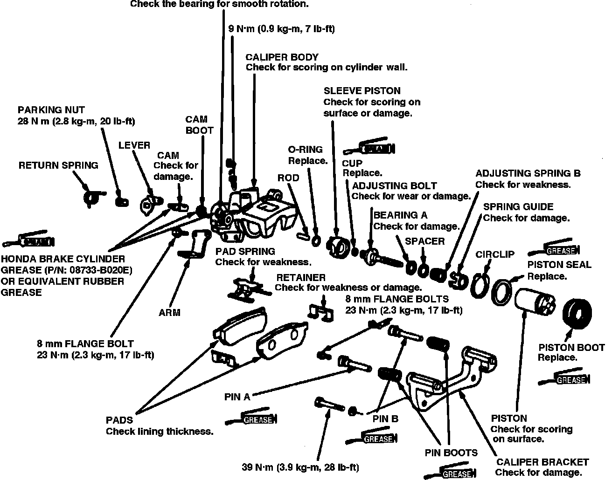
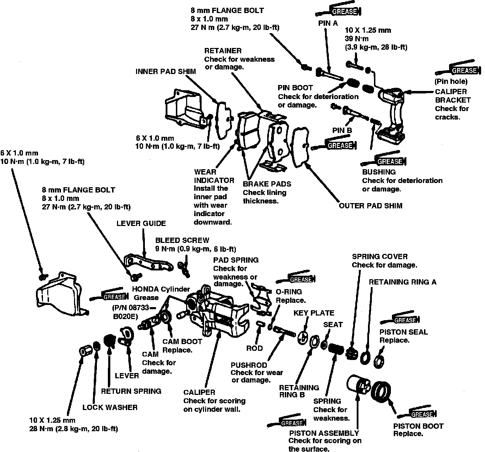
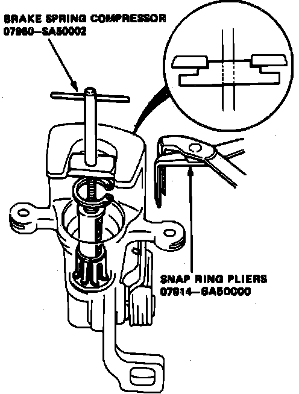
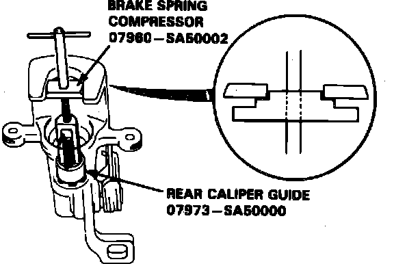
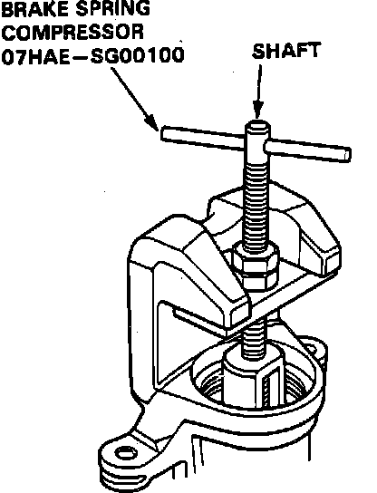
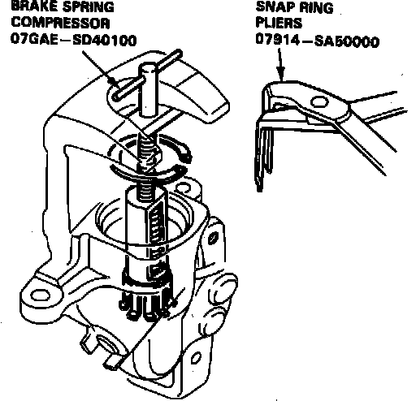
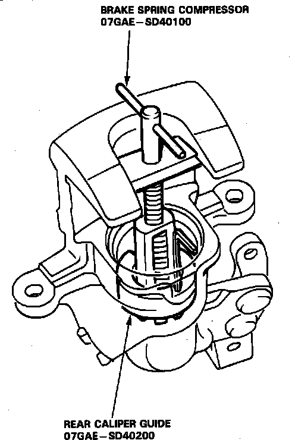
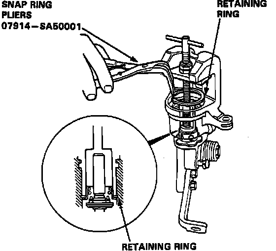

Rear
Removal & DisassemblyFig. 5 Exploded View Of Rear Disc Brake Assembly:

Fig. 6 Exploded View Of Rear Disc Brake Assembly:

1. Raise and support rear of vehicle and remove wheels.
2. Remove caliper shield, then disconnect parking brake cable from caliper.
3. Remove banjo bolt and disconnect brake line from caliper. Secure hose in raised position to prevent leakage.
4. Remove caliper mounting bolts and the caliper, Figs. 5 and 6.
5. Remove pad spring from caliper.
6. Remove piston and piston boot using tool No. 07916-6390001 or needle-nose pliers. Rotate piston as it is removed.
7. On Integra models, remove circlip, washer, adjusting spring and adjusting nut from piston.
8. On 1989-90 Legend models, remove retaining ring, spacer, wave washer, spacer, ball bearing, adjuster nut and cup from piston.
9. On all models, carefully pry piston seal out of caliper bore.
Fig. 8 Brake Spring Removal:

Fig. 9 Brake Spring Removal:

Fig. 10 Brake Spring Removal:

10. Position brake spring compressor tool between caliper body and spring cover, Figs. 8 through 10.
11. Turn shaft of tool to compress adjusting spring, then remove circlip or retaining ring.
12. On Integra models, remove spring cover, adjusting spring, spacer, bearing, adjusting bolt, sleeve piston and rod.
13. On 1989-90 Legend models, remove spring compressor, then the spring cover, spring, seat, retaining ring, key plate, pushrod and rod from caliper. Remove O-ring from pushrod.
14. On all models, remove return spring, parking nut, spring washer, lever, cam and cam boot.
Assembly & Installation
1. Pack needle bearing with suitable grease.
2. Apply suitable grease to cam boot, then install the boot in caliper.
3. Install cam, ensuring hole in cam faces cylinder.
4. Install lever, spring washer and parking nut. Torque nut to specifications, then install return spring.
5. Install rod in cam, then position new O-ring on sleeve piston or pushrod.
6. On Integra models, install sleeve piston. Ensure hole in bottom of piston is properly aligned with rod in cam and two pins on piston are aligned with holes in caliper.
7. On 1989-90 Legend models, install pushrod and key plate in cylinder. Ensure hole in pushrod aligns with rod, cut-out in key plate aligns with square portion of pushrod and lug on key plate aligns with hole in cylinder.
8. On Integra models, install new cup with cup groove facing bearing side on adjusting bolt, then position bearing, spacer, adjusting spring and spring cover on adjusting bolt. Install adjusting bolt assembly into caliper cylinder.
9. On 1989-90 Legend models, depress pushrod and install retaining ring, then the seat, spring and spring cover on pushrod.
10. On all models, position rear caliper guide tool No. 07973-SA50000 on Integra models, or No. 07GAE-SD40200 on Legend models, or equivalent in cylinder, ensuring cutout on tool aligns with tab on spring cover.
Fig. 11 Brake Spring Installation:

Fig. 12 Brake Spring Installation:

Fig. 13 Brake Spring Installation:

11. Install brake spring compressor tool, Figs. 11 through 13, and compress spring until tool bottoms out. Ensure rear caliper guide slides freely with spring.
12. Remove rear caliper guide tool and ensure flared end of spring cover is below circlip groove.
13. Install circlip, then remove spring compressor. Ensure circlip is properly seated in groove.
14. On Integra models, install adjusting nut, adjusting spring, washer and circlip into piston.
15. On 1989-90 Legend models, position cup on adjuster not with grove facing bearing, then install adjuster nut, bearing, spacers wave washer and retaining ring into piston.
16. On all models, apply suitable grease to new piston seal and piston boot, then install the seal and boot into caliper.
17. Apply suitable grease to outer surface of piston, then install piston while rotating it clockwise.
18. Install pad spring in caliper.
19. Install caliper in reverse order of removal.